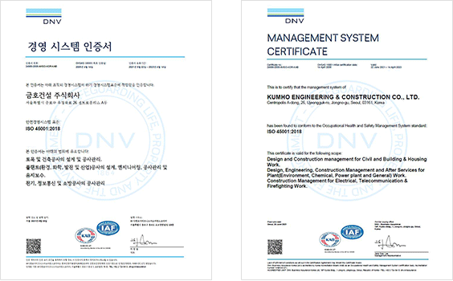

home > 지속가능 경영 > 안전경영
안전경영
KUMHO E&C
Engineering & construction
금호건설은 안전·보건을 경영의 최우선 가치로 추구하여 '실무·실용·실현가능한 안전보건문화'를 조성합니다.
-
하나
안전보건경영시스템
선순환 구조 확립 -
둘
안전·보건 관계 법령 및
제반 규제 준수 - 셋 실천과 확인으로 안전하고 쾌적한 작업환경 제공
-
넷
모든 구성원이 함께하는
안전보건문화 조성
안전보건경영시스템
KOSHA-MS / ISO45001:2018은 안전보건 위험성을 사전예측 및 예방하여 근로자의 생명보호 및 궁극적으로 기업의 이윤창출에 기여하고 안전 및 보건을 체계적으로 관리하고 있습니다.

안전점검
토목·건축·전기 분야 전문가에 의한 안전점검을 체계 화하여 안전관리에 대한 직원의 관심과 참여를 높이고, 현장별 개선사항을 실시간 공유하고 우수·모범사 례 등의 정보공유를 통해 기술안전관리와 위험예지 능력을 함양시킵니다.
| 년도 | 본사점검 | 전문기관점검 |
|---|---|---|
| 2011 | 39 | 208 |
| 2012 | 65 | 250 |
| 2013 | 151 | 328 |
| 2014 | 228 | 352 |
| 2015 | 220 | 281 |
| 2016 | 305 | 238 |
| 2017 | 329 | 273 |
| 2018 | 365 | 188 |
| 2019 | 403 | 118 |
| 2020 | 257 | 73 |
| 2021 | 182 | 63 |
| 2022 | 289 | 96 |
- 본사점검기술적, 관리적, 교육적 사항
- 전문기관점검해빙기, 동절기, 장마철, 혹서기 등 취약시기